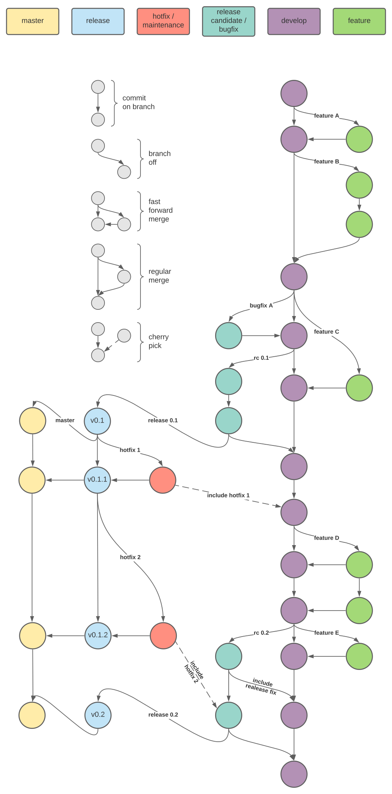

7.2. How to git¶
7.2.1. Main concept¶
We assume, that you know what git is and how it is basically used.
Otherwise, there are plenty tutorials. This paragraph is more about the
branching and release / testing strategy. Concerning the branching, it
is mainly based on the following articles: A successful branching model by Vincent
Driessen and Gitflow workflow
by Atlassian. Both references might give you a deeper understanding.
There will be the following main branches:
develop:
this will be the main development branch, where new features will be merged in and new releases are branched off
feature/*:
these are multiple feature branches like
feature/count_to_infinityandfeature/charge_faster. So when starting a new feature, branch off the develop branch usinggit checkout -b feature/new_stuff developand start working. Depending on the complexity of the feature, a feature branch might live for a long time and consist of a lot of commits or it might be a small one with only one commit. It is advised to keep it as short as possible, so it can be tested inside the develop branch.TOWRITE:
single commits should be stable if fast-forward commit should be done
public/private
when to rebase
release candidate / bugfix:
for every release candidate a new branch like
rc/0.1will be branched off from development. No new features should merged in, only bugfixes, that might come up during testing. When testing is finished, the release candidate will be branched of to a release branch, that gets tagged.simple bugfix branches like
bugfix/div_by_zerowill be used for fixing bugs
TOWRITE:
release strategy
how to test release candidates
versioning
back-merging of bugfixes inside the release candidate branches
release:
Once a release candidate has succeeded in all testing, the release branch like
release/0.1will be created and should be assumed as stable. Furthermore this branch will be used to keep track of shipped releases. So once a bug will be reported in production, that needs to be fixed also in the production version. That bugfix should be done on the release branch by branching off a hotfix.hotfix / maintencance:
These branches like
hotfix/forgot_to_unplugwill be used as bugfix branches which will act directly on the release branch, so they can be send back to production immediately. After finishing the fix, it gets merged back to its corresponding release branch and a new minor version will be tagged. Furthermore it will be merged or cherry-picked to the current release candidate branch or development branch (the decision, which branch to take might be different for each scenario).master:
This branch will point always to the latest release. The idea behind this branch is, that it tracks the latest stable version. In contrast, the develop branch should track the latest unstable version and the release candidate branch tracks the latest testing version.
A visualization of the branching structure and the corresponding git
commands can be found in the section Workhorse example. It might
be a good idea to read through the shell script. You can also execute
it, it should create a folder called rnd_git_dir, and play around.
7.2.2. Best practices¶
Despite all the best practices you might find online, here are some more:
Always try to create branches for seperate work units
If different units of work are intermixed inside one branch, it is harder to seperate commits belonging to different units of works. Also tracking down a specific bug to a single commit gets harder.
If possible, rebase your feature branch against its parent frequently
Doing that, merging back frequently rebased branch to its parent becomes much easier and you also keep track of ongoing and related changes that might affect your work. But keep in mind, that you should not rebase public branches, that are used by others - only if you set up a conspiracy
Never rebase public branches
Rebasing will rewrite the history and therefor will affect all users, that already checked our the branch. Just don’t do it!
7.2.3. Tips’n’Tricks for git¶
rebase (interactive), self-rebasing
stash
cherry-picking
merge conflicts
7.2.3.1. Using private repositories¶
If you create a local feature branch or some work in progress, and you
don’t want to put these things into the main repository, but still want
to have it backup’d somewhere. You can push this branch to a private
repository. Let’s say for example, the main repository is located at
https://github.com/SomeProject/SomeRepo and you have a private
repository at https://github.com/PrivateUser/PrivateRepo.
Furthermore the main repository is checked out in /main_repo, the
you can do the following:
/main_repo$ git checkout -b wip/new_stuff develop
/main_repo$ # do some work, add and commit
/main_repo$ # add private repo as additional remote, called 'private'
/main_repo$ git remote add private git@github.com:PrivateUser/PrivateRepo.git
/main_repo$ git push private
Now, the branch wip/new_stuff will be pushed to your private
repository. Locally, you can work with that branch like with any other
and some day you might merge or push it to the main repository, whose
remote name is usually origin.
7.2.4. Workhorse example¶
7.2.4.1. Visualization of the branching structure¶
7.2.4.2. Corresponding git commands¶
#!/bin/sh
# some setup
rm -rf ./rnd_git_dir
mkdir rnd_git_dir && cd rnd_git_dir
git init
git config user.email "dev@pionier-manufaktur.de"
git config user.name "git bot"
#
# start develop branch
# and create first commit
#
git checkout -b develop
echo "pionix" > contributors
mkdir src
touch src/main
git add contributors src/main
git commit -m "initial"
#
# feature A
# this feature is small and simple, so fast-forward
# merge is a good option
#
git checkout -b feature/a
echo "fancy" > src/feature_a
git add src/feature_a
git commit -m "added feature a"
# merge back with fast forward, no rebase necessary
git checkout develop
git merge --ff-only feature/a
# we don't keep references for feature branches
git branch -d feature/a
#
# feature B
# this is a large feature which might contain various
# intermediate steps, that are not stable - so a
# regulare merge might be the better option
#
git checkout -b feature/b
echo "broken" > src/feature_b
git add src/feature_b
git commit -m "added feature b"
echo "not broken" > src/feature_b
git add -u
git commit -m "finished feature b"
# regular merge
git checkout develop
git merge -m "Merging large feature b" --no-ff feature/b
git branch -d feature/b
#
# starting on feature C
#
git checkout develop
git checkout -b feature/c
echo "something new" > src/feature_c
git add src/feature_c
git commit -m "added feature c"
#
# meanwhile, bugfix A gets done
# a small bugfix, which can be merged back using
# fast-forward
#
git checkout develop
git checkout -b bugfix/a
echo "not broken for now" > src/feature_b
git add -u
git commit -m "bugfix a"
# merge back using fast-forward
git checkout develop
git merge --ff-only bugfix/a
# we don't keep references for bugfix branches
git branch -d bugfix/a
#
# starting release 0.1
#
git checkout -b rc/0.1
echo "0.1" > release
git add release
git commit -m "going for release 0.1"
#
# now merging back feature C
# as it is small, it can be merged back using fast-forward
# but this is now not possible, as bugfix A has happened
# in between - therefor we need to rebase against master
#
git checkout feature/c
git rebase develop
git checkout develop
git merge --ff-only feature/c
git branch -d feature/c
#
# back on working on release 0.1, we
# ran tests and things, and realized something needs to be fixed
#
git checkout rc/0.1
echo " at all" >> src/feature_b
git add -u
git commit -m "Fixed something"
#
# finishing release 0.1
# all tests went out well, so we can create the
# release branch and also move it to
# to master - this is the first use of master, so
# a simple new branch off to master is enough
# (later on, we will need to merge)
#
git checkout -b release/0.1
git tag "v0.1"
git checkout -b master
# and we need to merge back the release candidate to develop
git checkout develop
git merge -m "merging back release 0.1" rc/0.1
# we don't delete the branch reference for later use
#
# in production of v0.1, a serious bug was found, which needs
# to be fixed immediately, so we create a hotfix (a)
#
git checkout release/0.1
git checkout -b hotfix/a
echo "not broken at all" > src/feature_b
echo "0.1.1" > release
git add -u
git commit -m "small hotfix for feature b"
git checkout release/0.1
git merge --ff-only hotfix/a
git tag "v0.1.1"
#
# propagate release 0.1.1 to master
# because release 0.1 is the latest release
# branch, we also commit the changes to master
# in case we would already have a newer release
# this step would not be taken because master should
# point only to the latest releases
#
git checkout master
git merge --ff-only release/0.1
#
# we will also need the hotfix in our development branch
# due to fact, that it is a small fix, we can cherry pick
# it from the hotfix/a branch
#
git checkout develop
git cherry-pick hotfix/a
# remove the hotfix
# now we don't need the reference for the hotfix anymore
git checkout release/0.1
git branch -d hotfix/a
#
# feature D
# this might be a bigger feature with a clean or
# cleaned up history, where every single commit
# can be taken into develop, so a fast-forward
# will be ok
#
git checkout -b feature/d
echo "working" > src/feature_d_1
git add src/feature_d_1
git commit -m "Added feature d1"
echo "also working" > src/feature_d_2
git add src/feature_d_2
git commit -m "Added feature d2"
git checkout develop
git merge --no-ff --no-edit feature/d
git branch -d feature/d
#
# starting on release candidate v0.2
#
git checkout -b rc/0.2
echo "0.2" > release
echo "anonymous" >> contributors
git add -u
git commit -m "Getting ready for 0.2"
#
# meanwhile, feature E (small one)
#
git checkout develop
git checkout -b feature/e
echo "properly working" > src/feature_e
git add src/feature_e
git commit -m "added feature e"
git checkout develop
git merge --ff-only feature/e
git branch -d feature/e
#
# now we would like to incorporate the commit
# on rc/0.2 immediately into develop, so lets merge
# it back
git checkout develop
git merge --no-edit rc/0.2
#
# meanwhile a second hotfix (b) on release 0.1
#
git checkout release/0.1
git checkout -b hotfix/b
echo "not broken at all for ever" > src/feature_b
echo "0.1.2" > release
git add -u
git commit -m "fixed more issues with feature b"
git checkout release/0.1
git merge --ff-only hotfix/b
git tag "v0.1.2"
# propagate to master
git checkout master
git merge --ff-only release/0.1
#
# the hotfix (b) needs to be taken to our develop
# branch and our current ongoing rc branch
# we therefor cherry-pick it to the rc branch
# and from there it will be merged into the
# development branch by finishing the rc branch
#
git checkout rc/0.2
git cherry-pick hotfix/b || true
git checkout --ours release
git add -u
git commit --no-edit
git checkout release/0.1
git branch -d hotfix/b
#
# finishing release 0.2
#
# create release branch 0.2
git checkout rc/0.2
git checkout -b release/0.2
# tag it
git tag "v0.2"
# merge to master
git checkout master
git merge release/0.2 || true
git checkout --theirs release
git add -u
git commit --no-edit
# merge to develop
git checkout develop
git merge -m "merging changes from release 0.2" rc/0.2